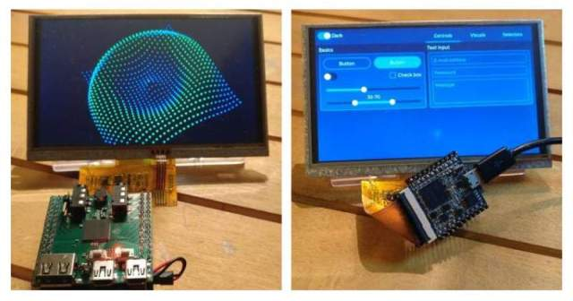

F1C100S Webserver Demo |
| Home | F1C100S | LWIP |
About this projectNetwork connection is made via USB-Ethernet adapter based on RTL8152B chip. This demo is part of the f1c_nonos project, which includes many bare metal code examples for Allwinner's F1C100S (F1C200S) SoC. All programs of this project can be run on f1c_dbc computer or LicheePi Nano demoboard. |